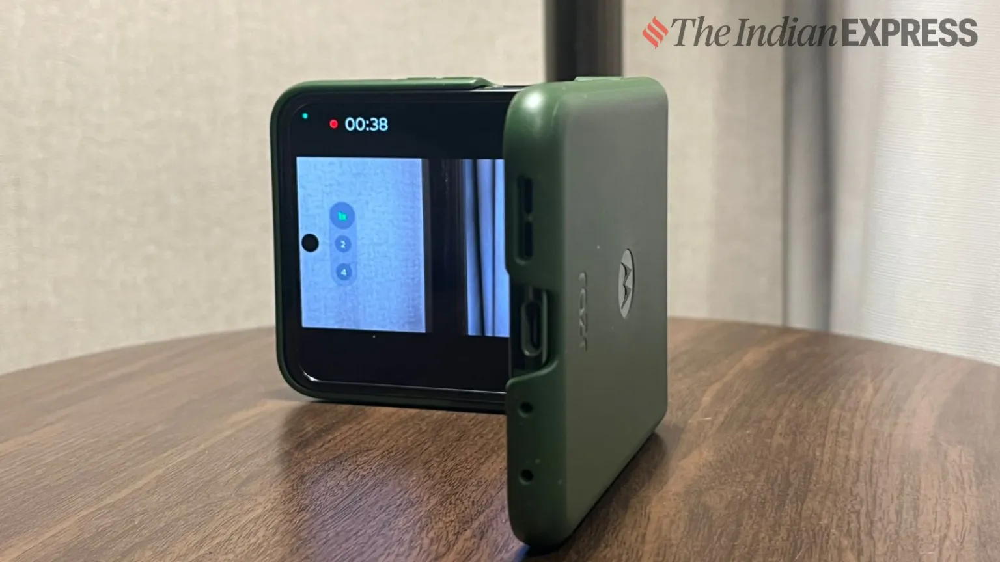
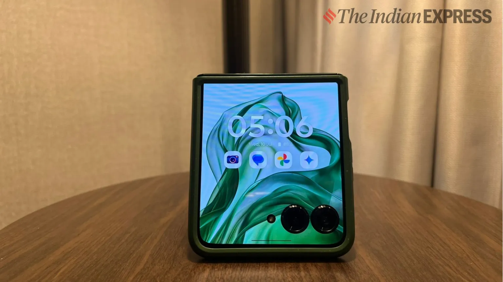

Motorola Razr 50 Ultra review: Familiar yet different
Motorola’s new Razr 50 Ultra is a fun, folding flip smartphone that puts focus on coolness.
Rs. 99,999

For years, I have struggled to adapt to foldable phones as a consumer. Honestly, I tried to ignore the familiar flaws I found with every new foldable phone, yet I was never able to give up my iPhone at any point in time. However, using the new Motorola Razr 50 Ultra (sold as Razr Plus in the US) felt different, and I felt more confident handling a foldable phone in my day-to-day life.
t’s a nice change, and my admission may be a sign that foldable smartphones can be relied upon despite the ifs and buts they come with like any other new product category. But the question remains: is it worth investing in something like a Motorola Razr foldable phone over a standard smartphone? Yes and no; it depends on a lot of factors. Here is my review of the Motorola Razr 50 Ultra.
Motorola Razr 50 Ultra price in India (as reviewed): Rs 99,999 Stylish and pocketable, too
I love using the Razr 50 Ultra as an old-school handycam.(Image credit: Anuj Bhatia/The Indian Express)
Motorola has heavily emphasised style and chicness with the new Razr, and I’m not surprised. The new design looks slick. I was a big fan of the original Razr when it came out in the 2000s, and the device still surprises me with the way it feels and looks. The new Razr is an extension of the OG Razr, adapted to modern settings. I like the edges, how it feels in the hand, the softness of the vegan back cover, and the colours it is available in.
The grown-up cover screen
The 4-inch cover display is sharp and has a 165Hz refresh rate. (Image credit: Anuj Bhatia/The Indian Express)